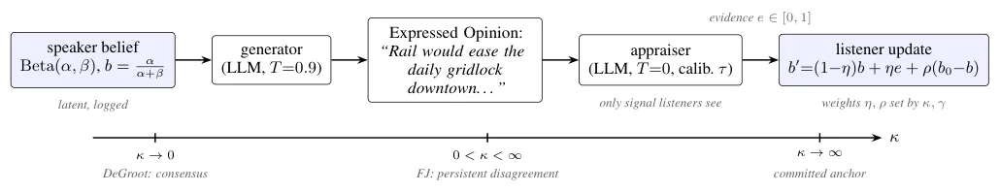
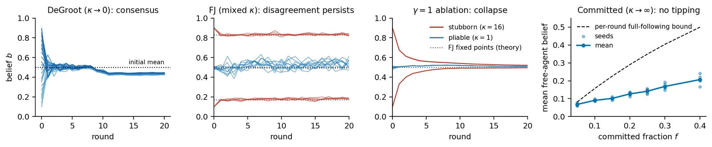
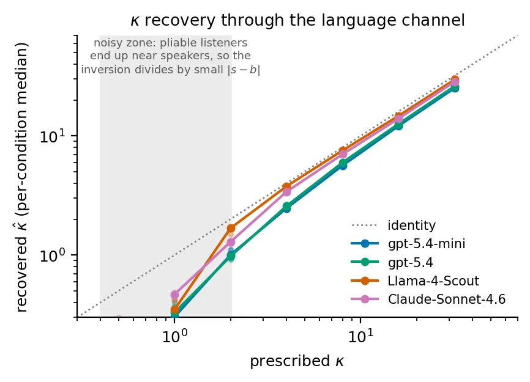
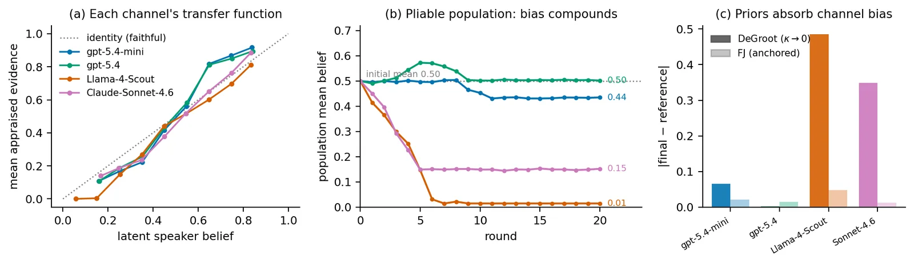

O problema: agentes LLM revisam opiniões de forma opaca
Modelos de linguagem grandes estão cada vez mais sendo usados como habitantes de simulações sociais: populações sintéticas que discutem, persuadem e formam opiniões coletivas. Na maioria desses sistemas, a opinião de um agente é revisada pelo próprio LLM, em contexto. Dois problemas bem documentados surgem daí.
Primeiro, as populações tendem a convergir para vieses inerentes ao modelo, apesar das personas atribuídas. É um colapso de consenso que torna sociedades simuladas irrealisticamente uniformes e sensíveis a pequenas mudanças no prompt. Segundo, estudos recentes mostram que revisões de confiança feitas por LLMs violam normas bayesianas e são mal calibradas quando há evidências conflitantes.
A dinâmica de opinião clássica oferece a maquinaria interpretável que falta nessas simulações baseadas em LLM. O modelo DeGroot prevê consenso em populações conectadas. O modelo Friedkin-Johnsen, ou FJ, explica desacordo duradouro através de teimosia por agente. Modelos de minoria comprometida estudam como uma pequena facção inflexível move uma maioria flexível. Mas esses modelos operam sobre escalares puros, sem noção de linguagem, que é justamente o que os LLMs oferecem agora.
Os autores perguntam: é possível aproveitar essa capacidade linguística sem perder a interpretabilidade dos modelos clássicos?
A ideia: separar crença de fala
Para combinar o controle matemático da dinâmica de opinião clássica com as capacidades linguísticas de agentes LLM, os autores adicionam uma pequena camada explícita de crença entre a persona de um agente e suas ações, no caso a geração de fala. Eles chamam os agentes resultantes de Bayesian Chronicle Agents, ou BCA.
A posição de um agente sobre um conceito é uma probabilidade mantida fora do modelo de linguagem. Quando o agente ouve uma fala, um modelo avaliador calibrado separado lê essa fala e a converte em evidência escalar. A crença então dá um passo de atualização bayesiana. Um único botão por agente, a força do prior κ (kappa), define o quanto cada passo move o agente: um agente teimoso carrega uma contagem de prior grande, então uma observação mal o move.
Com essa arquitetura, o que um agente acredita segue uma regra probabilística transparente. Como ele age ou fala em consequência é decidido pelo LLM. A camada de atualização bayesiana contribui três coisas para simulação social baseada em LLM: recuperabilidade do parâmetro prescrito, fidelidade aos regimes clássicos e auditabilidade, já que toda mudança de crença é um evento registrado.

Como funciona a camada de crença
A arquitetura tem três componentes. Primeiro, cada agente mantém uma crença latente sobre um tópico, representada como uma distribuição Beta com parâmetros alfa e beta. A crença atual b é alfa dividido por alfa mais beta, um número entre zero e um. Essa crença não está dentro do LLM: é uma variável externa, registrada e controlada.
Segundo, quando um agente precisa falar, o LLM gerador (rodado com temperatura 0.9 para variabilidade) transforma essa crença latente em uma opinião expressa em linguagem natural. Por exemplo, se a crença sobre transporte ferroviário é alta, o agente pode dizer algo como 'o trem aliviaria o congestionamento diário no centro'.
Terceiro, quando um agente ouve uma fala, um LLM avaliador separado (rodado com temperatura zero e calibrado) lê o texto e extrai evidência escalar e entre zero e um. Cada ouvinte então atualiza sua crença usando um passo inspirado na atualização FJ: a nova crença b' é uma combinação ponderada da crença atual, da evidência recebida e da crença inicial b0. Os pesos são definidos por κ e por um parâmetro global γ (gamma) que controla o esquecimento.
O parâmetro κ codifica teimosia. Um κ pequeno significa que o agente é maleável: uma única observação pode mover bastante sua crença. Um κ grande significa que o agente é teimoso: ele carrega um prior forte e uma observação mal o abala. Quando κ tende a zero, recuperamos o modelo DeGroot de consenso. Quando κ é finito, temos o regime FJ de desacordo persistente. Quando κ tende a infinito, o agente vira uma âncora comprometida que nunca muda de opinião.
Experimento: um parâmetro, três regimes clássicos
Os autores testam se um único parâmetro κ consegue reproduzir os três regimes canônicos da dinâmica de opinião. O cenário é sintético: vinte agentes discutem um tópico fictício (transporte ferroviário em uma cidade inventada) em um grafo completo, onde todos ouvem todos. As opiniões são binárias: favorável ou contrário. Quatro modelos foram testados: GPT-4.5, GPT-4.5-mini, Claude Sonnet 4.6 e Llama 4 Scout.
No regime de consenso, todos os agentes são maleáveis (κ igual a 0.1). A teoria DeGroot prevê que opiniões devem convergir para perto da média inicial. De fato, a dispersão de opiniões cai três ordens de magnitude em todos os quatro modelos. Mas onde o consenso aterrissa expõe o canal: cada modelo distorce opiniões de forma característica. Contra a média inicial verdadeira de 0.50, o consenso aterrissa em 0.50 para GPT-4.5 e 0.44 para GPT-4.5-mini, cujas distorções simétricas se cancelam em grande parte. Mas aterrissa em 0.15 para Claude e 0.01 para Llama, cujas distorções unilaterais se acumulam.
No regime de desacordo persistente, alguns agentes são teimosos (κ igual a 16 nos extremos) e outros são maleáveis (κ igual a 1 no meio). Opiniões param de convergir: facções mantêm suas posições e agentes maleáveis se acomodam entre elas. Essa dispersão estável é observada, com crenças finais por agente correspondendo ao ponto fixo FJ com R quadrado entre 0.93 e 0.99 nos quatro modelos. Quando γ é igual a um, a mesma população colapsa de volta para quase consenso e a recuperação de κ degrada acentuadamente, mostrando que o esquecimento é o ingrediente habilitador.
No regime de influência de minoria, uma minoria comprometida (κ tendendo a infinito) enfrenta uma maioria livre (κ igual a 4). A atualização afim não pode produzir um ponto de virada, e nenhum aparece: variando a fração comprometida de 5% a 40%, a opinião média da maioria se move suavemente, sem salto abrupto.

Recuperabilidade: o parâmetro prescrito sobrevive à ida e volta pela linguagem
Uma pergunta central: a teimosia prescrita é recuperável do comportamento depois da ida e volta completa pela linguagem? Para cada modelo, os autores varrem κ em sete valores de 0.5 a 32, gerando 14 mil falas e 266 mil eventos de ouvinte por modelo. Para cada evento, eles invertem a identidade exata de um passo: um ouvinte na crença b que ouve um falante com crença latente s e se move para b' produz um κ estimado.
Usar a crença latente do falante s em vez da evidência avaliada e significa que a recuperação só tem sucesso se o texto gerado carregou aquela crença e o avaliador a leu de volta. Qualquer erro remanescente é atribuível ao canal de linguagem. Os autores descartam eventos mal condicionados onde o ouvinte já concorda quase totalmente com o falante: tais falas mal movem o ouvinte independentemente de κ, então não carregam informação sobre teimosia.
Em todos os quatro modelos, o canal é fiel: evidência avaliada rastreia crença latente do falante com correlação de Pearson entre 0.94 e 0.97. E κ é recuperado perfeitamente em ordem de classificação: Spearman igual a 1.0 em todos os modelos. As magnitudes recuperadas são uniformemente atenuadas: por exemplo, κ igual a 32 vira 25 a 30. O canal infla a diferença entre evidência e crença, então agentes parecem um pouco mais maleáveis do que prescrito. Mas dentro da arquitetura BCA, o κ prescrito permanece comportamentalmente recuperável após passar pelo canal de linguagem.

Auditabilidade: a camada de crença expõe vieses sistemáticos
Como toda mudança de crença é um evento registrado, é possível comparar o que um falante acreditava com o que os ouvintes foram informados. Ou seja, quão fielmente o canal de linguagem transmite posição. Isso torna a simulação auditável e revela uma distorção sistemática em cada modelo testado.
Os autores constroem a função de transferência do canal: a relação entre a crença latente do falante e a evidência que o avaliador extrai. Se o canal fosse perfeito, essa função seria a identidade: evidência igual a crença. Mas todo modelo se desvia da identidade, cada um à sua maneira. Os GPTs mostram expansão simétrica: opiniões moderadas são empurradas para os extremos. O Llama mostra um deslocamento uniforme para baixo: todas as opiniões são sistematicamente subavaliadas. O Claude mostra amplificação assimétrica no lado negativo: opiniões contrárias são exageradas.
Populações DeGroot maleáveis acumulam essas distorções assimétricas. Uma simulação de ponta a ponta reportaria esses consensos deslocados como achados. A camada de crença, em vez disso, detecta e mede o viés. Esse é o valor da auditabilidade: você pode ver onde o modelo está distorcendo a informação e quanto.

O que o paper não mostra
Os autores são explícitos sobre as limitações. O estudo isola o mecanismo ao custo do escopo: um tópico sintético, um grafo completo, vinte agentes, posições binárias e validação contra teoria clássica, não contra trajetórias humanas. Essas simulações não são previsões de mudança de opinião humana.
O motor é sequencial, uma fala por vez, enquanto a referência teórica é síncrona de campo médio. Ainda assim, crenças terminais correspondem aos pontos fixos FJ com R quadrado entre 0.93 e 0.99 nos modelos, sugerindo que essa discrepância é pequena no cenário estudado.
O avaliador é em si um LLM: a calibração corrige a confiança do avaliador, mas distorção direcional do canal, seja introduzida na renderização ou na leitura, passa adiante e ainda molda dinâmicas no regime totalmente maleável. Toda conversa nas execuções é gerada por modelo por construção. Os únicos dados rotulados por humanos são o pequeno conjunto de calibração de cem julgamentos sobre um único tópico, então a calibração do avaliador é tão forte quanto esses cem julgamentos.
Como o tópico é deliberadamente fictício, escolhido para que modelos não tragam posição pré-treinada forte, os resultados não falam sobre debates onde eles trazem. Finalmente, o pipeline requer duas chamadas de LLM por fala em quatro modelos, o que pode limitar reprodutibilidade exata sem acesso comparável a API.
Por que isso importa
A camada de crença bayesiana torna simulação social com LLM controlável na moeda em que o campo de dinâmica de opinião já confia. O κ prescrito permanece recuperável através da ida e volta completa pela linguagem em ordem de classificação exata, Spearman 1.0 em quatro modelos. Ele controla o espectro de regime clássico contra referências de forma fechada. E seus eventos registrados tornam a simulação auditável, revelando viés de canal por modelo.
Identidades de múltiplos conceitos, correção de canal direcional e não apenas de confiança, e topologias heterogêneas são próximos passos naturais. O trabalho mostra que é possível ter interpretabilidade matemática e capacidade linguística ao mesmo tempo, sem sacrificar uma pela outra. A chave é separar o que o agente acredita de como ele fala.
O que fica
- Uma camada bayesiana explícita separa crença de fala em agentes LLM, permitindo controle interpretável de dinâmica de opinião com um único parâmetro κ.
- O parâmetro de teimosia prescrito é recuperável após conversão para linguagem, com ordem de classificação perfeita (Spearman 1.0) em todos os quatro modelos testados.
- A arquitetura reproduz três regimes clássicos sob demanda: consenso, desacordo persistente (R²=0.93–0.99 contra teoria FJ) e influência de minoria comprometida.
- Eventos registrados expõem vieses sistemáticos por modelo que simulações de ponta a ponta absorveriam silenciosamente, tornando a simulação auditável.
Paper original: Bayesian Belief Layer for Controllable Opinion Dynamics in LLM Agents
Comentários
Nenhum comentário ainda. Seja o primeiro.